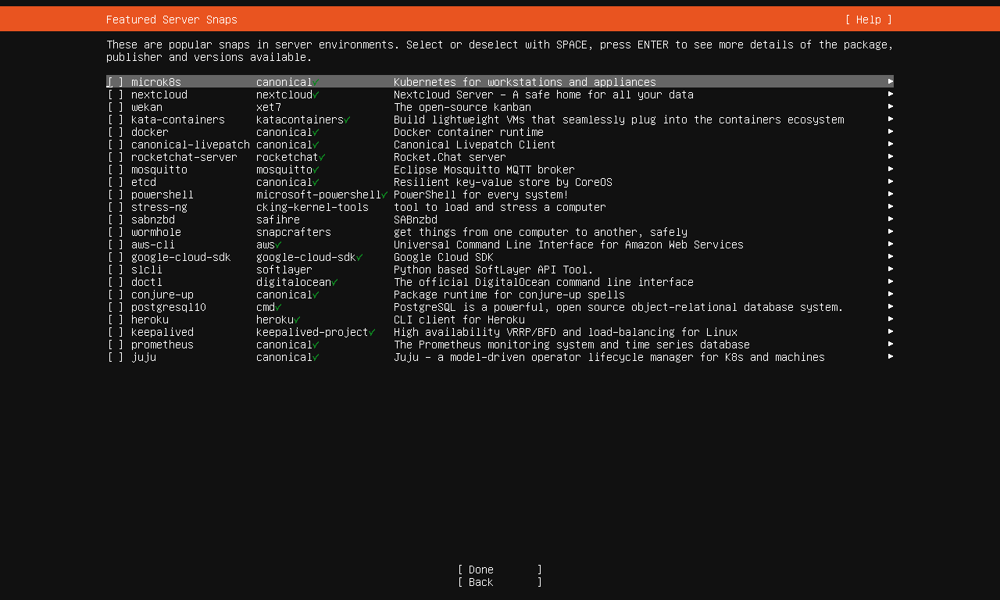
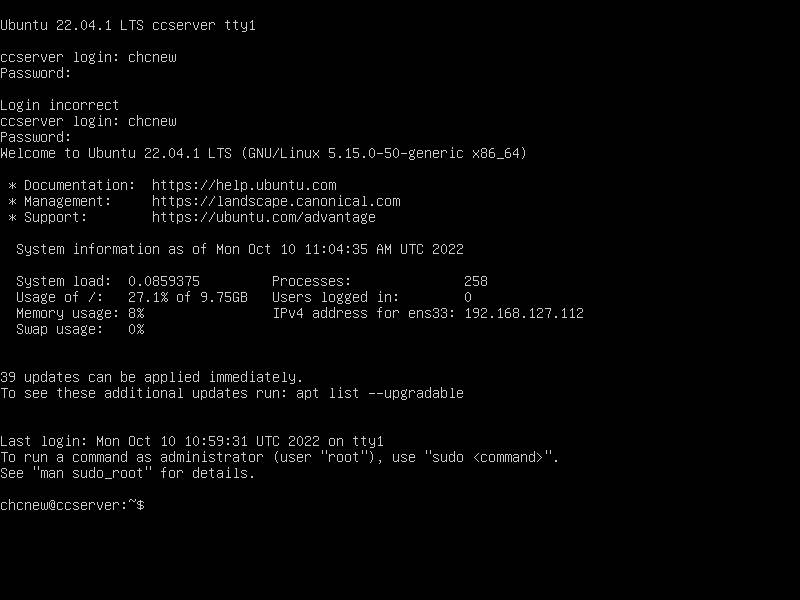

DockerLearningNote¶
Learning is like sailing against the current; if you do not advance, you will retreat.
一、虚拟化技术¶
1.了解虚拟化技术¶
-
什么是虚拟化 虚拟化，是指通过虚拟化技术将一台计算机虚拟为多台逻辑计算机。在一台计算机上同时运行多个逻辑计算机，每个逻辑计算机可运行不同的操作系统，并且应用程序都可以在相互独立的空间内运行而互不影响，从而显著提高计算机的工作效率。
-
什么是虚拟化技术 虚拟化技术是一套解决方案。完整的情况需要CPU、主板芯片组、BIOS和软件的支持，例如VMM软件或者某些操作系统本身。即使只是CPU支持虚拟化技术，在配合VMM的软件情况下，也会比完全不支持虚拟化技术的系统有更好的性能。
-
虚拟化的类型 全虚拟化（Full Virtualization) 全虚拟化也成为原始虚拟化技术，该模型使用虚拟机协调guest操作系统和原始硬件，VMM在guest操作系统和裸硬件之间用于工作协调，一些受保护指令必须由Hypervisor（虚拟机管理程序）来捕获处理。全虚拟化的运行速度要快于硬件模拟，但是性能方面不如裸机。
-
半虚拟化（Para Virtualization） 半虚拟化是另一种类似于全虚拟化的技术，它使用Hypervisor分享存取底层的硬件，但是它的guest操作系统集成了虚拟化方面的代码。该方法无需重新编译或引起陷阱，因为操作系统自身能够与虚拟进程进行很好的协作。半虚拟化需要guest操作系统做一些修改，使guest操作系统意识到自己是处于虚拟化环境的，但是半虚拟化提供了与原操作系统相近的性能。
2.常见的虚拟化技术¶
2.1 KVM¶
KVM是指基于Linux内核（Kernel-based）的虚拟机（Virtual Machine）。也有人将KVM架构分解为两部分：KVM驱动，即linux kernel的一个模块和Qemu，即用于模拟虚拟机的用户空间组件，提供I/O设备模型，访问外设的途径。KVM最大的好处就在于它是与Linux内核集成的，所以速度很快。KVM的宿主操作系统必须是Linux，支持的客户机操作系统包括Linux、Windows、Solaris和BSD，运行在支持虚拟化扩展的x86和x86_64硬件架构上,cpu支持VT技术。KVM是一套虚拟化解决方案，不过因为这个方案实际上只实现了内核中对处理器(Intel VT, AMDSVM)虚拟化特性的支持，它缺乏设备虚拟化以及相应的用户空间管理虚拟机的工具，而Qemu是一套独立的虚拟化解决方案，KVM借用了QEMU的代码并加以精简，连同KVM一起构成了另一个独立的虚拟化解决方案，不妨称之为：KVM+QEMU。
2.2 Xen¶
Xen是另一套独立的虚拟化解决方案，最初的Xen只支持半虚拟化，Intel VT技术出现后，添加了全虚拟化功能，这个全虚拟化功能也是借助了qemu实现，但不是完全依赖qemu。Xen是一个开放源代码虚拟机监视器，由剑桥大学开发。Xen的缺点是操作系统必须进行显式地修改（“移植”）以在Xen上运行（但是提供对用户应用的兼容性），所以比较麻烦。使得Xen无需特殊硬件支持，就能达到高性能的虚拟化。Linux的官方内核在较早之前已经去掉了对Xen的支持。
2.3 VMWare¶
VMWare (Virtual Machine ware)是一个“虚拟PC”虚拟机管理软件。它的产品可以使你在一台机器上同时运行二个或更多Windows、DOS、LINUX系统。与“多启动”系统相比，VMWare采用了完全不同的概念。多启动系统在一个时刻只能运行一个系统，在系统切换时需要重新启动机器。VMWare是真正“同时”运行，多个操作系统在主系统的平台上，就象标准Windows应用程序那样切换。而且每个操作系统你都可以进行虚拟的分区、配置而不影响真实硬盘的数据，你甚至可以通过网卡将几台虚拟机用网卡连接为一个局域网，极其方便。安装在VMware操作系统性能上比直接安装在硬盘上的系统低不少，因此，比较适合学习和测试。
KVM、Xen、VMWare的对比如下表所示：
| 是否开源 | 是否免费 | 性能 | 优点 | 缺点 |
|---|---|---|---|---|
| KVM | 是 | 是 | 高 | 1.KVM是内核本身的一部分，因此可以利用内核的优化和改进。2.高性能,稳定,无需修改客户机系统。3.开源、免费 |
| XEN | 是 | 是 | 高 | 1.性能较好。2.开源、免费、操作复杂，维护成本较高，目前已被RedHat抛弃 |
| VMWare | 否 | 否 | 一般 | 相对比较成熟的商业软件，市场占有率较大，不开源，需要付费 |
Docker与传统虚拟机的比较： 所有的应用程序都有自己的依赖关系，其中包括软件和硬件资源。 Docker是开发者的开放平台，通过将每个应用程序打包到容器中来隔离依赖关系。容器就像是轻量级的虚拟机，可以扩展到成千上万的节点，通过在不同虚拟环境中运行相同应用程序来帮助提升云的可移植性。虚拟机广泛用于云计算，通过使用虚拟机来实现隔离和资源控制。 虚拟机使用自己的内存管理加载完整的操作系统，使应用程序更加高效和安全，同时确保其高可用性。
Docker容器与虚拟机有什么不同？ 虚拟机具有完整的操作系统，其自身的内存管理通过相关的虚拟设备进行支持。 在虚拟机中，为用户操作系统和虚拟机管理程序分配有效的资源，从而可以在单台计算机（或主机）上并行运行一个或多个操作系统的多个实例。 每个客户操作系统都作为主机系统中的单个实体运行。 另一方面，Docker容器是使用Docker引擎而不是管理程序来执行的。 因此容器比虚拟机小，并且由于主机内核的共享，可以更快地启动，具有更好的性能，更少的隔离和更好的兼容性。 Docker容器能够共享一个内核并共享应用程序库，因此容器比虚拟机具有更低的系统开销，只要用户愿意使用单一平台来提供共享的操作系统，容器可以更快，更少资源。虚拟机可能需要几分钟才能创建并启动，而只需几秒钟即可创建并启动一个容器。与在虚拟机中运行应用程序相比，容器中包含的应用程序提供了卓越的性能。 Docker容器比虚拟机弱的一个关键指标就是“隔离”。英特尔的VT-d和VT-x技术为虚拟机提供了ring-1硬件隔离技术，因此虚拟机可以充分利用它的优势。它可以帮助虚拟机器高效使用资源和防止相互干扰。 Docker容器还没有任何形式的硬件隔离，因此它们容易受到攻击。
如何进行进行选择？ 选择容器还是虚拟机依赖于应用程序如何设计。 如果应用程序旨在提供可伸缩性和高可用性，那么容器是最好的选择，否则应用程序可以放置在虚拟机中。对于高I/O要求的业务，例如数据库服务，建议部署Docker+物理机，因为在虚拟机中部署Docker，I/O性能将受到虚拟机的限制。对于虚拟桌面服务等强调租户权限和安全的业务，建议采用虚拟机方式，虚拟机的多租户强隔离特性，保证租户在拥有虚机root权限的同时，其他租户和主机的安全。 或者更好的选择是混合方案，运行在虚拟机中的容器。 Docker容器可以在虚拟机内部运行，虚拟机并为它们提供经过验证的隔离，安全属性，移动性，动态虚拟网络等。为实现安全隔离和资源的高利用率，基本应该遵循：不同租户的业务运行采用虚拟机隔离，相似类型的业务部署在同一组容器上的思路。
结论 Docker容器正在成为DevOps环境中的一个重要工具。 DevOps领域内的Docker Containers的用例非常多。在Docker容器上运行应用程序，然后在任何地方部署（Cloud或内部部署或任何Linux的风格）现在都已成为现实。 在异构环境中工作，虚拟机提供了高度的灵活性，而Docker容器主要关注应用程序及其依赖关系。Docker Containers允许通过使用每个云的虚拟机环境来处理云，从而轻松移植跨云的应用程序堆栈。这代表了一个有用的功能，在没有Docker Containers的情况下，必须以更加复杂和乏味的方式来实现。这里阐述的并不是关于放弃虚拟机，而是在必要时除了虚拟机之外，根据实际情况使用Docker容器，不认为Docker容器可以完全清除虚拟机。
二、Docker介绍¶
Docker 是一个开源的应用容器引擎，基于 Go 语言 并遵从Apache2.0协议开源。 Docker 可以让开发者打包他们的应用以及依赖包到一个轻量级、可移植的容器中，然后发布到任何流行的 Linux 机器上，也可以实现虚拟化。 容器是完全使用沙箱机制，相互之间不会有任何接口（类似 iPhone 的 app）,更重要的是容器性能开销极低。 Docker 从 17.03 版本之后分为 CE（Community Edition: 社区版） 和 EE（Enterprise Edition: 企业版），对于我们的学习使用社区版就可以了。
1.Docker官方仓库：**https://hub.docker.com/¶
2.Docker相关组件：¶
Docker Client - Docker客户端
Docker Server - Docker daemon主要组成部分，接受用户通过Docker Client发送的请求，并且按照相应的路由规则实现路由分发。
Docker 镜像 - Docker镜像运行之后变为容器(docker run)
组件间的协作方式：

3.Docker 镜像化方式与应用共存¶
设计引入：

改进设计：

分层设计（如LAMP配置，各占一层，更新版本直接层级替换即可。）：
三、Docker安装linux ubuntu版本¶
Docker支持linux\windows\mac三种版本安装
1.VMware安装ubuntu服务器版¶
1.1 安装过程¶
前面配置就选择稍后安装操作系统...直至这里选择系统路径...

选择语言，没有中文，选择英语吧


安装ssh服务

配置第三方源：什么都不选，直接Done

安装完成，由于安装的是server版本，安装速度非常块，之后选择【Cancel update and reboot】“取消更新并重新启动”.。

安装完成，这里需要一点时间等待自动重启...

出现错误！这是由于重启，任然加载iso文件导致，关闭虚拟机，不加载iso文件就好了。

重启后首次需要点击回车进入系统；
登录用户名和密码，输入我们设置的用户名密码（注：密码输入是隐式输入，不会显示）

1.2 ifconfig使用，需要安装相关工具包¶
sudo apt install net-tools
1.3 开启root用户及关闭¶
# 设置密码即开启root用户
sudo passwd root
# 删除密码即关闭root用户
sudo passwd -dl root
说明：ubuntu虽然开启root账户，但是ssh仍然不支持连接！只能本地切换；如需连接，需要配置相关文件。
1.4 ssh连接¶
ssh chcnew@192.168.127.xxx
设置root开启ssh连接：
vim /etc/ssh/sshd_config
# 我们发现line #PermitRootLogin prohibit-password
# 更改内容
PermitRootLogin yes
# 保存后退出
Esc + wq
# 接下来重启ssh服务
service ssh restart
1.5 ubuntu22.04配置静态ip¶
安装相关服务：
sudo apt-get install network-manager
cat /etc/netplan/00-installer-config.yaml
# 原本配置内容
# This is the network config written by 'subiquity'
network:
ethernets:
ens33:
dhcp4: true
version: 2
修改网络配置：
network:
version: 2
renderer: NetworkManager # 渲染器
ethernets:
ens33: # 网卡名称
dhcp4: no # 关闭dhcp4
dhcp6: no # 关闭dhcp6
addresses: [192.168.127.150/24] # 静态ip
gateway4: 192.168.127.2 # 网关
nameservers:
addresses: [192.168.127.1,114.114.114.114] # DNS - 第一个设置为PC共享给VM-net8的网络ip
重载服务生效：
sudo netplan apply
# 测试网路
ping www.baidu.com
2.Ubuntu服务器版安装Docker¶
Docker官方安装指导：https://docs.docker.com/desktop/install/ubuntu/
下载DEB package时，实时更新查看日志命令：
tail -f 文件名
配置允许匿名用户上传文件ftp服务，vsftp配置参考：https://blog.csdn.net/qq_43299421/article/details/115321927
# 安装服务
sudo apt-get install vsftpd
# 开启服务
service vsftpd start
# 创建一个文件夹
sudo mkdir /home/uftp
chmod 777 /home/uftp
# 修改配置文件
sudo vim /etc/vsftpd.conf
修改允许匿名用户连接配置：
anonymous_enable=YES
打开允许上传文件注释配置：
write_enable=YES
wq保存
# 重启服务
service vsftpd restart
# 测试ftp客户端连接
ftp 192.168.127.xxx
# 上传文件
put 文件路径
继续，根据官方网站提示，先安装docker-engine，再装docker-desktop...
最后，运行测试镜像转为容器：sudo docker run hello-world
四、Docker镜像加速配置¶
申请阿里云Docker官方加速应用：阿里云镜像加速器
通过修改daemon配置文件/etc/docker/daemon.json来使用加速器(下面是我个人加速器-每个账户都不同)
sudo mkdir -p /etc/docker
sudo tee /etc/docker/daemon.json <<-'EOF'
{
"registry-mirrors": ["https://ftvwjbmx.mirror.aliyuncs.com"]
}
EOF
sudo systemctl daemon-reload
sudo systemctl restart docker
# docker进程查看
ps -ef | grep docker
五、Docker化应用程序¶
比如Wordpress运行环境需要LAMP：
- linux
-
apache、mod_rewrite
-
mysql5.6+
-
php5.6+
1.docker run命令解析¶
# docker run 镜像转为容器 --name 容器名称 --env 环境变量注入-d 后台运行 mariadb 镜像
docker run --name db --env MYSQL_ROOT_PASSWORD=examplepwd -d mariadb
# --link参数会向db容器的/etc/hosts件写一条解析记录，对应值为db容器的ip地址，这样可以访问到db容器
# 运行镜像 起名MyWordPress 链接db数据库:别名mysql -p设置端口映射 -d后台运行进程
docker run --name MyWordPress --link db:mysql -p 8080:80 -d wordpress
# 启动容器实例命令示例
docker run \
-itd \
--name mydocker \
--link mysql:mysql \
-v /home/chcnew/shared1:/root/shared1 \
-v /home/chcnew/shared2:/root/shared2 \
-p 8080:80 \
-p 4430:443 \
/bin/bash
2.下载镜像具体应用run¶
# 拉取镜像到本地
docker pull wordpress
docker pull mariadb
# 查看本地镜像列表
docker images
# 运行镜像转为容器
docker run --name db --env MYSQL_ROOT_PASSWORD=examplepwd -d mariadb
docker run --name MyWordPress --link db:mysql -p 8080:80 -d wordpress
# 查看docker进程
docker ps
# 访问ip+端口就可以进入wordpress里面啦！
注意：镜像run成功的前提，必须至少有一个前台守护进程运行。
六、Docker单容器管理¶
Docker三个重要概念：仓库（Repository）、镜像（Image）和容器（Container）
运行命令示例：
docker run --name MyWordPress --link db:mysql -p 8080:80 -d wordpress
Docker指令基本用法：
docker + 关键字（command）+ 参数 参数值
1.Docker基础常用命令¶
# 镜像层面
docker info # 信息查看
docker search + 镜像名 # 仓库查询镜像
docker pull + 镜像名 # 镜像下载，一般去hub.docker.com里面去找对应下载的命令
docker images # 本地镜像信息列表查询
docker rmi + 镜像名:版本号 或者 镜像id（允许只写前4位） # 删除本地镜像
docker run # 容器创建（运行镜像转容器）
# 容器层面
docker ps # 容器正在运行的进程查询 查询到stop的容器
docker ps -a # 可以查到全部run过的镜像（容器）
docker start/stop + 容器名 # 容器启动/停止
docker rm + 容器名 # 删除stop的容器
# docker指令除了单条使用，也可支持赋值使用、解析变量和嵌套使用。
docker info命令注意查看Storage Driver:
Storage Driver: overlay2 # 正常，稳定
Storage Driver: dm # 异常，不稳定
2.嵌套使用删除容器¶
# 强制删除全部容器
# 表示循环执行命令
# docker ps -a -q 表示列出全部容器id
docker rm -f $(docker ps -a -q)
Doker命令大全：https://www.runoob.com/docker/docker-command-manual.html
3.容器更多相关命令¶
每个容器被创建以后，都会自动分配一个CONTAINER ID作为唯一标识(128位)，这可以用于启动、停止、修改、删除等操作。
docker ps --no-trunc # 查看128位完整id
docker start/stop CONTAINERID # 启动/停止容器 也可以通过别名启动/停止
docker start/stop MyWordPress
docker inspect MyWordPress # 查看容器全部信息
docker logs MyWordPress # 查看容器日志
docker stats MyWordPress # 查看容器占用系统资源信息
docker exec + 容器名 + 该容器内需要执行的命令
docker exec -it + 容器名 + /bin/bash # 进入容器内部的bash，直接在内部使用命令
4.docker run命令的延伸¶
--restart=always # 总是随着docker服务启动而自动启动
-h x.xx.xxx # 设置容器主机名
--dns xx.x.xx.x # 设置容器DNS服务器
--dns-search # DNS搜索设置
--add-host hostname:IP # 注入hostname<>IP解析，在容器内部进入/etc/hosts文件中，会多一条记录 hostname IP.
--rm # 容器停止时自动删除
5.docker其他命令集合¶
# 搜索镜像
docker search ubuntu
# 查看镜像占用空间
docker system df
七、Docker镜像特性¶
- 镜像下载以后会有一个唯一表示IMAGE ID，这与容器创建时容器会有CONTAINER ID是一致的；唯一标识也可以用“镜像名:版本号”表示，最新稳定版本号latest
- 镜像的分层：Docker的镜像通过联合文件系统（union filesystem）将各层文件联合叠加在一起。
- bootfs：用于系统引导的文件系统，bootfs(boot file system)主要包含bootloader和kernel, bootloader主要是引导加载kernel, Linux刚启动时会加载bootfs文件系统，在Docker镜像的最底层是bootfs。这一层与我们典型的Linux/Unix系统是一样的，包含boot加载器和内核。当boot加载完成之后整个内核就都在内存中了，此时内存的使用权已由bootfs转交给内核，此时系统也会卸载bootfs。
- rootfs：rootfs (root file system) ，在bootfs之上。包含的就是典型 Linux 系统中的 /dev, /proc, /bin, /etc 等标准目录和文件。rootfs就是各种不同的操作系统发行版，比如Ubuntu，Centos等等。 传统模式中，系统启动时，内核挂载rootfs表现为“只读”模式，完整性自检完成后，将其挂载位“读写”模式。 Docker中，rootfs有内核挂载为“只读”模式，然后通过一个UFS技术，挂载一个“可写”层。
- 已有分层只能读不可写。
- 上层优先级永远大于下层，镜像之后转为容器，最上层即为可写层。
八、Docker镜像构建（容器转为镜像）¶
镜像构建有两种方式：容器转换和DockerFile构建
1.容器转为镜像¶
容器 - > 镜像，示例：
# 容器转镜像 需要转换的容器名称 转换后的镜像名称:版本号
docker commit ContainerName ImageName:VersionNO
实战，centos制作一个包含mysql的镜像：
# 下载一个包含前台守护进程的centos，否则启动不了（网易云、阿里云镜像站都可以下载）
docker pull hub.c.163.com/public/centos:6.7-tools
docker images
docker run --name mysql -d hub.c.163.com/public/centos
docker ps -a
# 进入运行的容器mysql内部
docker exec -it mysql /bin/bash
yum -y install mysql mysql-server
service mysqld start
# 配置mysql密码
mysqladmin -uroot password 123
mysql -uroot -ps
# 创建一个数据库
mysql> create database learning;
mysql> show databases;
# 退出mysql数据库
mysql> exit;
# 退出mysql容器内部
exit
# 查看正在运行的容器
docker ps -a
# 将容器创建为镜像
docker commit mysql mysqlImage:5.1
docker images
# 此时就可以查看到新创建的镜像了
# 注意：这种方法，docker run镜像以后，内部mysql服务并不会自己启动！commit只是保存当时镜像。
2.DokcerFile脚本构建镜像¶
DockerFile是一种被Docker服务程序解释的脚本，它由一条一条的指令构成，每条指令对应linux相关命令，Docker服务程序将这些指令翻译成真正的linux命令。 DockerFile有自己的书写格式和支持的命令，Docker服务程序解决这些命令间的依赖关系，类似于makefile，Docker服务程序将读取DockerFile脚本，生成定制的镜像（Image）
2.1 DockerFile命令构建¶
docker build -t home/jdk-tomcat
2.2 DockerFile指令说明¶
FROM ：¶
定制的镜像都是基于 FROM 的镜像，下面的 centos 就是定制需要的基础镜像。后续的操作都是基于 centos。构建仅能使用一个基础镜像。
FROM centos:7.2
FROM centos
MAINTAINER：¶
镜像维护者姓名或邮箱地址，对该镜像转容器之后使用docker inspect命令，可以查看到信息
MAINTAINER ccplayer ccplay@163.com
RUN：¶
用于执行后面跟着的命令行命令。有以下俩种格式：
shell 格式：
RUN <命令行命令>
# <命令行命令> 等同于，在终端操作的 shell 命令，例如：
# RUN cd /temp wget https://download.xxx.xxx/xxx... | tar -zxvf
exec 格式：
RUN ["可执行文件", "参数1", "参数2"]
# 例如：
# RUN ["./test.php", "dev", "offline"] 等价于 RUN ./test.php dev offline
注意：Dockerfile 的指令每执行一次都会在 docker 上新建一层。所以过多无意义的层，会造成镜像膨胀过大。例如：
FROM centos
RUN yum -y install wget
RUN wget -O redis.tar.gz "http://download.redis.io/releases/redis-5.0.tar.gz"
RUN tar -xvf redis.tar.gz
以上执行会创建 3 层镜像。可简化为以下格式：
FROM centos
RUN yum -y install wget \
&& wget -O redis.tar.gz "http://download.redis.io/releases/redis-5.0.tar.gz" \
&& tar -xvf redis.tar.gz
如上，以 && 符号连接命令，这样执行后，只会创建 1 层镜像。
CMD：¶
类似于 RUN 指令，用于运行程序，但二者运行的时间点不同:
CMD 在docker run 时运行。
RUN 是在 docker build。
作用：为启动的容器指定默认要运行的程序，程序运行结束，容器也就结束。CMD 指令指定的程序可被 docker run 命令行参数中指定要运行的程序所覆盖。
注意：如果 Dockerfile 中如果存在多个 CMD 指令，仅最后一个生效。
格式：
CMD <shell 命令>
CMD ["<可执行文件或命令>","<param1>","<param2>",...]
CMD ["<param1>","<param2>",...] # 该写法是为 ENTRYPOINT 指令指定的程序提供默认参数
推荐使用第二种格式，执行过程比较明确。第一种格式实际上在运行的过程中也会自动转换成第二种格式运行，并且默认可执行文件是 sh。
ENTRYPOINT：¶
类似于 CMD 指令，但其不会被 docker run 的命令行参数指定的指令所覆盖，而且这些命令行参数会被当作参数送给 ENTRYPOINT 指令指定的程序。
但是, 如果运行 docker run 时使用了 --entrypoint 选项，将覆盖 ENTRYPOINT 指令指定的程序。
优点：在执行 docker run 的时候可以指定 ENTRYPOINT 运行所需的参数。
注意：如果 Dockerfile 中如果存在多个 ENTRYPOINT 指令，仅最后一个生效。
格式：
ENTRYPOINT ["<executeable>","<param1>","<param2>",...]
可以搭配 CMD 命令使用：一般是变参才会使用 CMD ，这里的 CMD 等于是在给 ENTRYPOINT 传参，以下示例会提到。
示例：
假设已通过 Dockerfile 构建了 nginx:test 镜像：
FROM nginx
ENTRYPOINT ["nginx", "-c"] # 定参
CMD ["/etc/nginx/nginx.conf"] # 变参
1、不传参运行
docker run nginx:test
容器内会默认运行以下命令，启动主进程。
nginx -c /etc/nginx/nginx.conf
2、传参运行
docker run nginx:test -c /etc/nginx/new.conf
容器内会默认运行以下命令，启动主进程(/etc/nginx/new.conf - 假设容器内已有此文件)
nginx -c /etc/nginx/new.conf
USER：¶
用于指定执行后续命令的用户和用户组，这边只是切换后续命令执行的用户（用户和用户组必须提前已经存在）。默认用户为root
格式：
USER <用户名>[:<用户组>]
EXPOSE：¶
仅仅只是声明端口，显示作用而已。
作用：
- 帮助镜像使用者理解这个镜像服务的守护端口，以方便配置映射。
- 在运行时使用随机端口映射时，也就是 docker run -P 时，会自动随机映射 EXPOSE 的端口。
格式：
EXPOSE <端口1> [<端口2>...]
ENV：¶
设置环境变量，定义了环境变量，那么在后续的指令中，就可以使用这个环境变量。
格式：
ENV <key> <value>
ENV <key1>=<value1> <key2>=<value2>...
以下示例设置 NODE_VERSION = 7.0 ， 在后续的指令中可以通过 $NODE_VERSION 引用：
ENV NODE_VERSION 7.0
RUN curl -SLO "https://nodejs.org/dist/v$NODE_VERSION/node-v$NODE_VERSION-linux-x64.tar.xz" \
&& curl -SLO "https://nodejs.org/dist/v$NODE_VERSION/SHASUMS256.txt.asc"
构建镜像添加环境变量示例：
ENV JAVA_HOME /root/jdk1.7.0_25
ENV PATH=$JAVA_HOME/bin:$PATH
ADD：¶
ADD 指令和 COPY 的使用格类似（同样需求下，官方推荐使用 COPY）。功能也类似，不同之处如下：
- ADD 的优点：在执行 <源文件> 为 tar 压缩文件的话，压缩格式为 gzip, bzip2 以及 xz 的情况下，会自动复制并解压到 <目标路径>。
- ADD 的缺点：在不解压的前提下，无法复制 tar 压缩文件。会令镜像构建缓存失效，从而可能会令镜像构建变得比较缓慢。具体是否使用，可以根据是否需要自动解压来决定。
ADD <src> <dest>
<src>：相对被构建的源目录的相对路径，可以是文件或目录路径，也可以是远程url；
<dest>：container的绝对路径
COPY：¶
复制指令，从上下文目录中复制文件或者目录到容器里指定路径。
格式：
ADD <src> <dest>
COPY [--chown=<user>:<group>] <源路径1>... <目标路径>
COPY [--chown=<user>:<group>] ["<源路径1>",... "<目标路径>"]
[--chown=
<源路径>：源文件或者源目录，这里可以是通配符表达式，其通配符规则要满足 Go 的 filepath.Match 规则。例如：
COPY hom* /mydir/
COPY hom?.txt /mydir/
VOLUME：¶
定义匿名数据卷。在启动容器时忘记挂载数据卷，会自动挂载到匿名卷。
作用：
- 避免重要的数据，因容器重启而丢失，这是非常致命的。
- 避免容器不断变大。
格式：
VOLUME ["<路径1>", "<路径2>"...]
VOLUME <路径>
在启动容器 docker run 的时候，我们可以通过 -v 参数修改挂载点。
WORKDIR：¶
指定工作目录。用 WORKDIR 指定的工作目录，会在构建镜像的每一层中都存在。（WORKDIR 指定的工作目录，必须是提前创建好的）。
docker build 构建镜像过程中的，每一个 RUN 命令都是新建的一层。只有通过 WORKDIR 创建的目录才会一直存在。
格式：
WORKDIR <工作目录路径>
ONBUILD：¶
用于延迟构建命令的执行。简单的说，就是 Dockerfile 里用 ONBUILD 指定的命令，在本次构建镜像的过程中不会执行（假设镜像为 test-build）。当有新的 Dockerfile 使用了之前构建的镜像 FROM test-build ，这时执行新镜像的 Dockerfile 构建时候，会执行 test-build 的 Dockerfile 里的 ONBUILD 指定的命令。
格式：
ONBUILD <其它指令>
使用场景：比如保证该镜像不能再次制作新镜像，可以设置销毁程序等。
2.3 DockerFile构建tomcat镜像示例¶
准备三个文件准备构建镜像：
- apache-tomcat-9.0.68.tar.gz
- jdk-7u25linux-x64.tar.gz
- DockerFile
下载至/root/downloads：¶
wget https://dlcdn.apache.org/tomcat/tomcat-10/v10.0.27/bin/apache-tomcat-10.0.27.tar.gz
wget https://download.oracle.com/otn/java/jdk/8u341-b10/424b9da4b48848379167015dcc250d8d/jdk-8u341-linux-aarch64.tar.gz
DockerFile写入内容¶
FROM centos:latest
MAINTAINER ccplayer@163.com
ADD ./apache-tomcat-9.0.68.tar.gz /root
ADD ./jdk-7u25linux-x64.tar.gz /root
ENV TOMCAT_HOME /root/apache-tomcat-9.0.68
ENV JAVA_HOME /root/jdk1.8.0_341
ENV PATH=$JAVA_HOME/bin:$PATH
EXPOSE 8080
ENTRYPOINT $TOMCAT_HOME/bin/startup.sh && tailf $TOMCAT_HOME/logs/catalina.out
DockerFile对应解释大概就是
- 基础镜像设置
- 信息标注设置
- 复制文件到/root下，tar格式自动解压
- 设置环境变量，jdk加入PATH环境变量
- 暴露端口提示
- 运行tomcat启动命令及日志查看作为前台守护进程。
构建镜像处理过程¶
docker images
docker pull centos